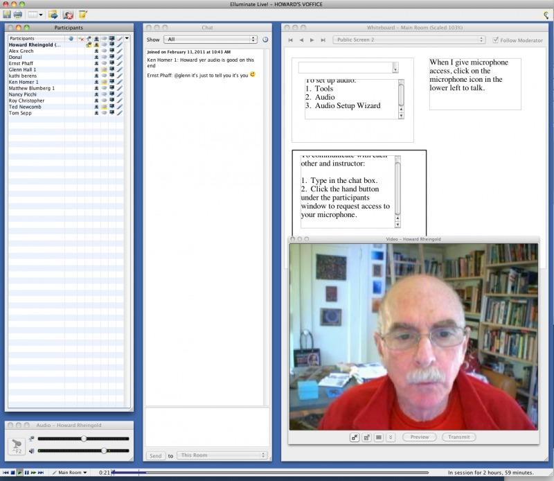

Web services that enable broadband-connected learners to communicate in real time via audio, video, slides, whiteboards, chat, and screen-sharing enable learning groups to add some of the audio-visual dimensions familiar from synchronous face-to-face communication to otherwise asynchronous platforms such as forums, blogs, and wikis. This article includes resources for finding and evaluating appropriate for-free or for-fee platforms, tips on participative activities for real-time meetings, and suggestions for blending real-time and asynchronous media.
Real-time meeting media
The Peeragogy Handbook was conceived and constructed by a group of people on four continents who had not met and had not known about each other before we began meeting online. The process involves asynchronous media, including forums, wikis, social bookmarking groups, and Wordpress, but it probably would never have cohered into a group capable of collective action if it had not been for the real-time meetings where we were able to see each other’s faces, hear each other’s voices, use a whiteboard as an anonymous agenda-generator, exchange links in chat, show each other examples through screen-sharing. Together, the asynchronous and real-time media enabled us to begin to see ourselves as an effective group. We used both real-time and asynchronous tools to work out processes for creating, refining, and publishing the Handbook, to divide labor, decide on platforms and processes, to collaboratively compose and edit articles, and to design and add graphical and video elements. In particular, we used the Blackboard Collaborate platform, a web-service that enables up to 50 people at a time to meet in a multimedia, recordable, meeting room for around $500/year. We’ve experimented with other paid platforms, such as Adobe Connect (about the same price as Collaborate), and when we meet in groups of ten or less, we often use the free and recordable Google+ Hangout service. Smaller groups also use Skype or free telephone conferencing services. Mumble is an open source audio-only tool that is popular with gamers. We’re watching the development of Big Blue Button, a free and open-source real-time meeting platform, as it develops the full suite of tools that are currently only available for a fee. Dozens of other free, ad-supported and/or freemium webconferencing systems such as Big Marker and Dim-Dim can be found in lists like Howard Rheingold’s and Robin Good’s (see links at the end of this chapter). Free phone conferencing services provide another technological “lowest common denominator”: some provide a few extras like downloadable recordings.

Features of real-time meeting platforms
There are many free services for chat, screen-sharing, whiteboards, and video conferencing, but combining all these components in separate panes of the same screen (preferably) or as separate tabs of a browser can have a powerful synchronizing and harmonizing effect on the group. The features to look for in meeting platforms include:
Audio and video: Choose platforms that enable voice-over-internet-protocol (VOIP) and easy ways for participants to configure their microphones and speakers. Today’s webcams, together with adequate lighting and a broadband connection, enable a number of people to be visible at the same time. In Blackboard Collaborate, the person who is speaking at a given moment is visible in the largest video pane, while other participants are available in smaller video windows. Audio and video convey much more of a human dimension than text communications alone. A group of people who have seen and heard each other online are able to work together via asynchronous media such as forums and wikis more effectively. Online face-to-face meetings are often the best way for a group to argue constructively and decide on critical issues. Forums and email are comparatively bad choices for distributed decison-making.
Slide pushing: The best platforms will convert .ppt or .pdf files for sequential display. With the addition of text chat, annotations to slides, and the ability to “raise your hand” or interrupt with your voice, an online lecture can be a more multidimensional experience than even a highly discursive in-person lecture.
Text chat: As a backchannel, a means of quickly exchanging links to relevant resources, a channel for collaborative note-taking, a way of communicating with the lecturer and with other participants, text chat adds a particularly useful dimension to real-time peeragogical meetings – especially when the division of labor is explicitly agreed upon in advance. We’ve found that even in meetings that use the real-time collaborative editor Etherpad for collaborative note taking, participants may gravitate toward the built-in chat box for discussion.
Screen sharing: The ability of participants to show each other what is on their screens becomes especially important in peer learning, where we all have some things to show each other.
Web tours: An alternative to screen-sharing is the ability to display the same web page(s) to all participants by entering URLs.
Interactive whiteboards: A shared space that enables participants to enter text, drawings, shapes, colors, to move and resize media, and to import graphic content – especially if it allows anonymous actions – can foster the feeling of participating in a collective intelligence. Collaborative anonymous mind-mapping of the discussion is one technique to try with whiteboards. The whiteboard can also be used to generate an emergent agenda for an “un-meeting”.
Configuring Google+ Hangout - a free alternative for up to 10 people
For up to 10 people, each equipped with a webcam, microphone, and broadband connection, Google+ Hangout can provide high-quality audio-video conferencing. By enabling the text-chat feature and adding Google Docs (text documents, presentations, or spreadsheets), screensharing, and SketchUp (whiteboard), it is possible to emulate most of what the commercial services offer. Adobe Connect and Blackboard Collaborate currently have the user-interface advantage of displaying chat, video, whiteboard/slides as resizable panes on one screen; at present, the free Google services can provide a powerful extension of the basic audio-video platform, but participants have to shift between different tabs or windows in the browser. Note that it is possible to stream a Hangout and record it to YouTube, again at no cost to the user. We’ve used this tool extensively in the Peeragogy project.
Suggestions for real-time meetings
In the nine online courses I have facilitated, the emphasis on co-learning encouraged participants to suggest and shape active roles during real-time meetings. By creating and taking on roles, and shifting from role to role, participants engage in a kind of collective learning about collective learning which can be as pleasurable as well as useful. Typically we first brainstorm, then analyze, then organize and present the knowledge that we discover, construct, and ultimately convey together.
Roles for participants in real-time meetings
- Searchers: search the web for references mentioned during the session and other resources relevant to the discussion, and publish the URLs in the text chat
- Contextualizers: add two or three sentences of contextual description for each URL
- Summarizers: note main points made through text chat.
- Lexicographers: identify and collaboratively define words and phrases on a wiki page.
- Mappers: keep track of top level and secondary level categories and help the group mindmapping exercise at the end of the session.
- Curators: compile the summaries, links to the lexicon and mindmaps, contextualized resources, on a single wiki page.
- Emergent Agendas: using the whiteboard for anonymous nomination and preference polling for agenda items, with voice, video, and text-chat channels for discussing nominations, a group can quickly set its own agenda for the real-time session.
The Paragogical Action Review
Charlie Danoff and Joe Corneli slightly modified the US Army’s “After Action Review” into a technique for evaluating peer learning as it happens. The five steps in the “PAR” are:
-
Review what was supposed to happen
-
Establish what is happening
-
Determine what’s right and wrong with what we are doing
-
What did we learn or change?
-
What else should we change going forward?
Participants can run through these steps during live meetings to reassess the medium, the readings, the group dynamics, or any other choices that have learning relevance. The focus in the PAR is on change: as such, it provides a simple way to help implement the “double loop learning” described Chris Argris [1].
Reference
- Argyris, Chris. “Teaching smart people how to learn.” Harvard Business Review, 69.3, 1991.